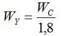
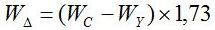
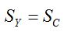
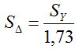
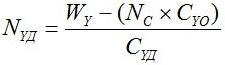
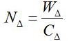
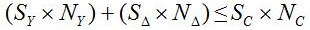

Перейти на главную страницу справочника.
Расчёт одно-двухслойных совмещённых обмоток с последовательным соединением фаз №15.
| Прежде чем начинать расчёт совмещённых обмоток, выполните пересчёт обычной (старой) обмотки. 1. Соединение фаз в звезду. 2. Число параллельных ветвей а=1. (В совмещённой обмотке число параллельных ветвей будет а=1/1) 3. Проверить совпадение среднего шага старой и новой обмоток. При несовпадении, пересчитать старую обмотку на средний шаг новой. |
Записываем данные обычной (старой) обмотки.
| Sс | Сечение провода старой обмотки. |
| Nс | Количество витков в пазу старой обмотки. |
| Sc×Nc | Заполнение паза в старой обмотке. |
| Wс | Количество витков в фазе старой обмотки. |
Расчёт витков в фазе основной и совмещённой обмотках.
- Расчёт витков в фазе основной обмотки. WY - количество витков в фазе основной обмотки. Wс - количество витков в фазе старой обмотки.

- Расчёт витков в фазе совмещённой обмотки. WΔ - количество витков в фазе совмещённой обмотки. Wс - количество витков в фазе старой обмотки. WY - количество витков в фазе основной обмотки.

Расчёт сечения провода основной и совмещённой обмоток.
- Расчёт сечения провода в основной обмотке. SY - сечение провода основной обмотки. Sс - сечение провода старой обмотки.

- Расчёт сечения провода в совмещённой обмотке. SΔ - сечение провода совмещённой обмотки. SY - сечение провода основной обмотки.

Расчёт числа витков в пазу основной и совмещённой обмоток.
- Расчёт числа витков в пазу основной обмотки. Число витков в однослойной секции основной обмотки равно числу витков в пазу старой обмотки NYO=NС. Для расчёта количества витков в двухслойных секциях основной обмотки, воспользуйтесь формулой. NYД - число витков в двухслойной секции основной обмотки. WY - количество витков в фазе основной обмотки. NС - число витков в пазу старой обмотки. CYO - число однослойных секций в фазе основной обмотки. CYД - число двухслойных секций в фазе основной обмотки.

- Расчёт числа витков в пазу совмещённой обмотки. Число витков в фазе разделить на число секций в фазе. NΔ - число витков в секции совмещённой обмотки. WΔ - количество витков в фазе совмещённой обмотки. CΔ - число секций в фазе совмещённой обмотки.

- Проверить заполнение паза новой обмотки двигателя в двухслойных пазах со старой обмоткой по формуле.
